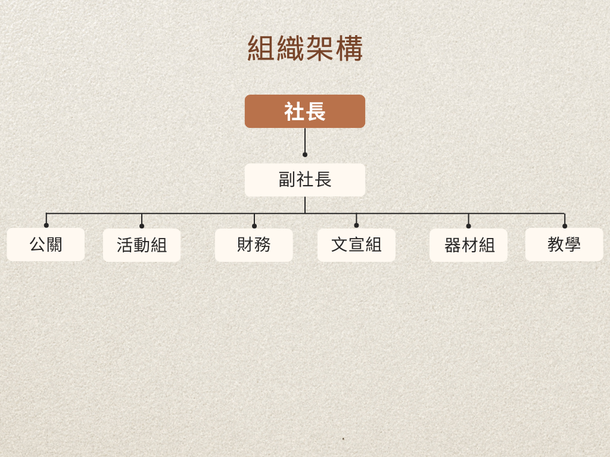

社團簡史
桌遊研習社創立於 2013 年 6 月 3 日，由陳照升、蝦蝦、Kate Wu等一群熱愛桌上遊戲的學長姐共同經營第一屆，當時未設人數上限，社員人數曾高達 155 人，教學由達倫大大帶領，雖然人力吃緊但有穩定的進步。本社於第一屆時便報名參加社團評鑑檔案競賽組，雖未得名，但因此獲得一間獨立社團辦公室。
第二屆由言臻、宗穎等人為首，將分家制度帶進桌遊研習社，並且設置人數上限，讓教學品質提升，加強人與人之間的連結性。此外更大量購入社團課適用之桌遊，奠定了社產基礎。
第三屆在社長陳聆瑋與其他幹部努力之下，將分組的制度套入了桌遊社，分成教學組、活動組、設計組，讓社員能在各領域的學習與提升，也在期末時舉辦了各組的成果發表會，讓社員能夠發揮所學到的東西。除了第一屆已有的社課、桌遊週等，第二屆更增辦了講座、耶誕趴等活動，並且豐富了桌遊週的主題性及內容。此外，也完善了組織章程；訂定經費使用管理辦法、社產租借使用注意事項等。第三屆除了增添分組制度，也讓期末餐敘能與各組做連結，提升社員對社團的向心力，在下學期桌遊週時，除了更改主題外，也從原本的抽獎制度更改為積分制度，並且增強了網路宣傳的功能，也因此第三屆桌遊週時吸引了更多師生的目光，也讓社員對社團有了認同感。
到了第六屆的時候，將家爸媽一詞改為領路人，以破除學長姐叫學弟妹爸媽的尷尬；同時，增加了彈性社課制度，讓社員可以在每週四也來社辦，與幹部共享桌遊樂趣。
在第七屆的時候決定在社課的時候將儲幹們分在同一組遊玩以增加之間的感情，熟悉之後可能會一起管理社團的夥伴們。
在第八至十一屆的時候則延續過去作法，共同維持社團感情。
在第十二屆時，由一群熱愛桌遊的幹部們合作，更新組織章程（將家爸媽改為桌長），並舉辦了桌遊周、桌遊比賽及復活節活動，打下本社各活動的基礎。
社團宗旨
近年來桌上遊戲盛行，有鑑於此，集合有共同興趣者成立桌遊同好平台，從中培養正確桌遊知識、增進邏輯思考及反應能力。透過社團活動與桌遊週，推廣桌遊文化並讓喜愛桌遊者有交流空間，同時為對桌遊設計有興趣者提供討論與實踐的平台。

迎新
七大奇蹟
桌遊周
開會!!
12屆回顧
Tkubgc 12
社課
好多贊助品
璀璨賓石
下台一鞠躬
12屆幹部
社長
姓名:陳韋中
系級:資工二A
負責社團對外大大小小事項
特色:常常打錯我們其他幹部的名字
副社長
姓名:洪亦芯
系級:資工二A
負責協助社長處理事項
特色:只要有社長懶得處理的事情，最後都會到他手上
活動長
姓名:游士萱
系級:歷史三
負責發想活動內容
特色:喜歡同時做一大堆事情忙死自己
活動
姓名:黃婉雯
系級:
活動的大大小小他都會參與
特色:很常突然蹦出新點子
財務
姓名:張容綺
系級:數學二
管錢!!
特色:雖然說是管錢的，但有時候腦袋會突然卡住
小編
姓名:林奕綺
系級:資工二C
IG的貼文都是他設計的喔(如果不好看就去找他
特色:基本上除了社團活動以外的時間你不會在社辦看到他(除了玩狼人殺的時候)
器材
姓名:杜明道
系級:資工二A
社團的桌遊他們肯定最了解
特色:你會時不時被他冷笑話冷到一下
器材
姓名:劉松旻
系級:
他要開店當大老闆了，以後缺錢找他
特色:平常看起來人畜無害，兇起來的時候給你好看
器材
姓名:柯昕妤
系級:會計
器材組裡唯一的女生，力氣應該很大(?但沒有比我們活動長大
特色:就是一個特色
認證
姓名:徐碩廷
系級:電機
關於社團學分的事情問他就對了!!
特色:我們社長最常打錯名字的人就是他
文書
姓名:李婉瑜
系級:電機
我們開會的一字一句都在他的紀錄下
非常的外星人一個
十二屆
姓名:十二屆小精靈
系級:桌遊社
一群歡喜冤家